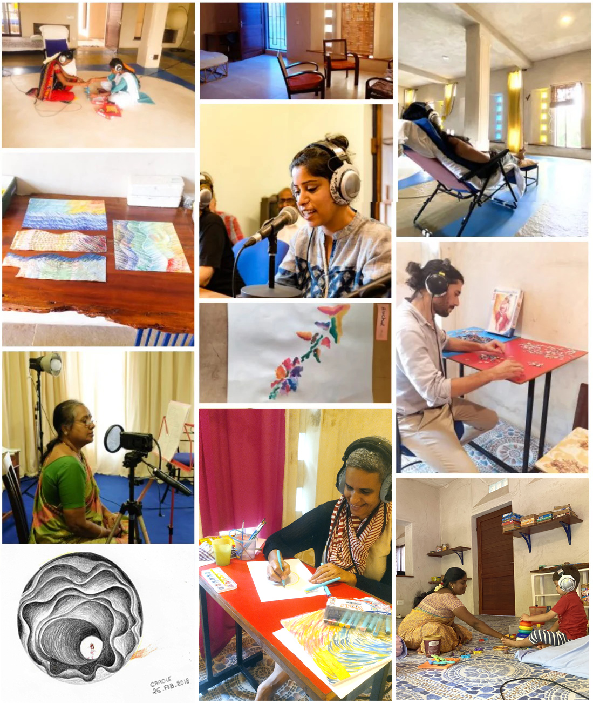

Our Story
Meeting with Dr. and Mrs. Tomatis
The Tomatis Research Centre of the Auroville Language Laboratory is the very first centre in India to offer this method. We had the unforgettable opportunity of meeting Dr. Alfred Tomatis and his wife Mrs. Léna Tomatis in the south of France in December 2001, just before he passed away.
We received his blessings to bring the method to Auroville and India. Our centre opened in 2004 and we have, at the time of writing, completed 20 years of practice.
The overall protocol is modified and highly individualised as per the needs of each person — whether a child on the autism spectrum, an adult seeking self-development, or a musician expanding their sonic palette.
"The ear is not just an organ of hearing. It is a dynamo that charges the brain and gives it energy to communicate, to listen, to be fully present."— Dr. Alfred Tomatis (1920–2001)
